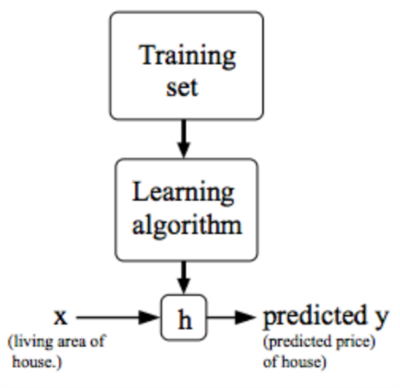
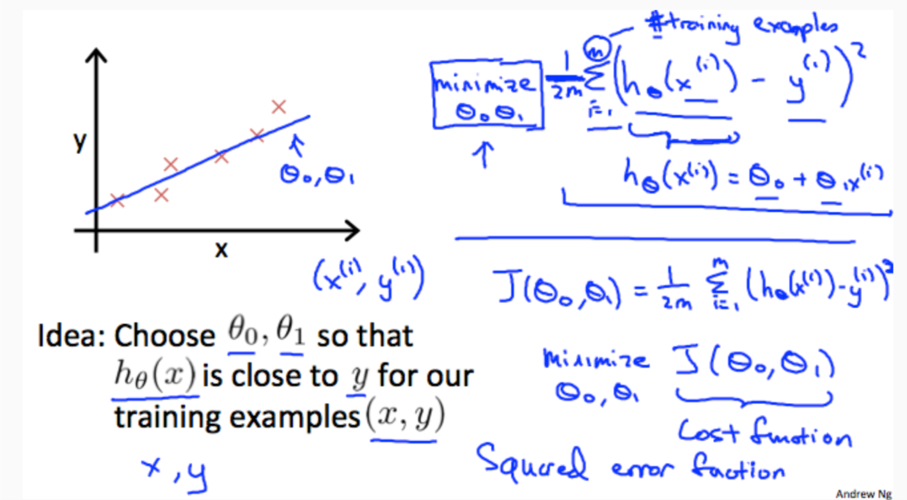
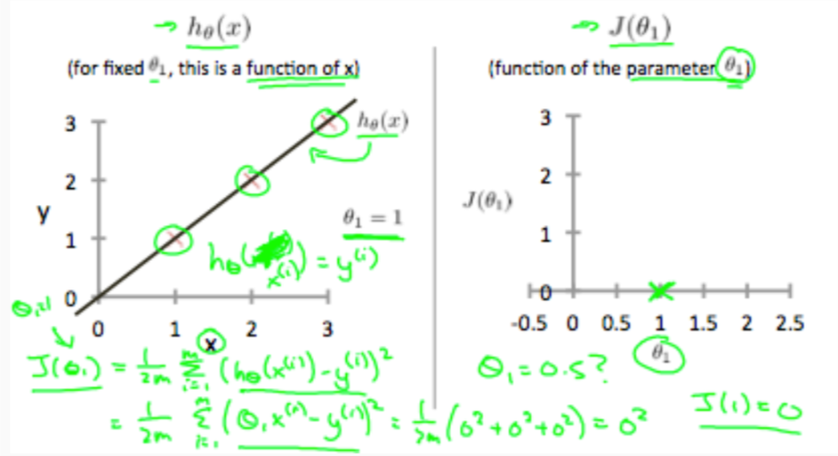
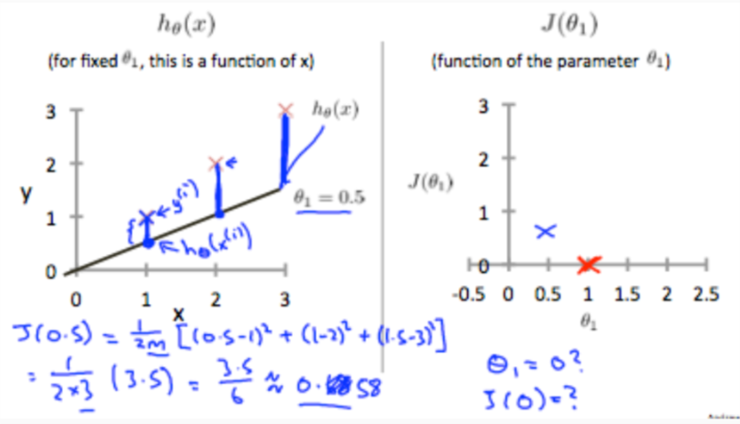
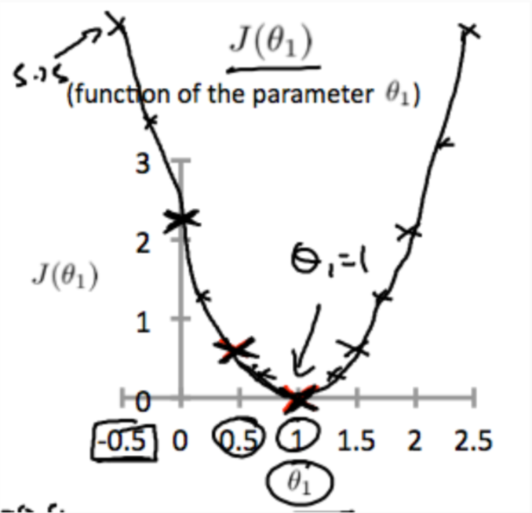
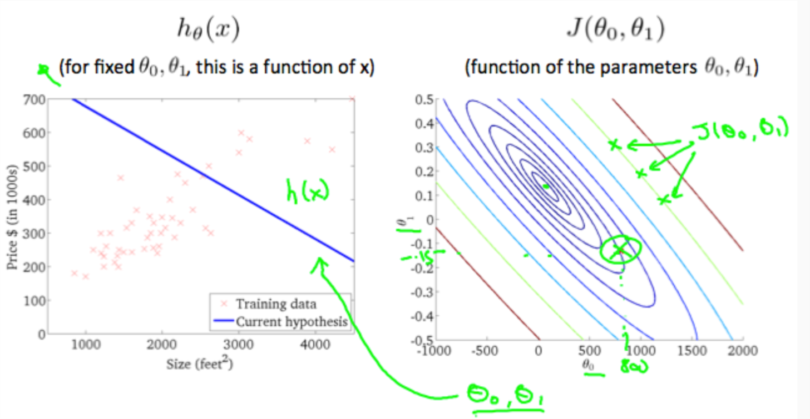
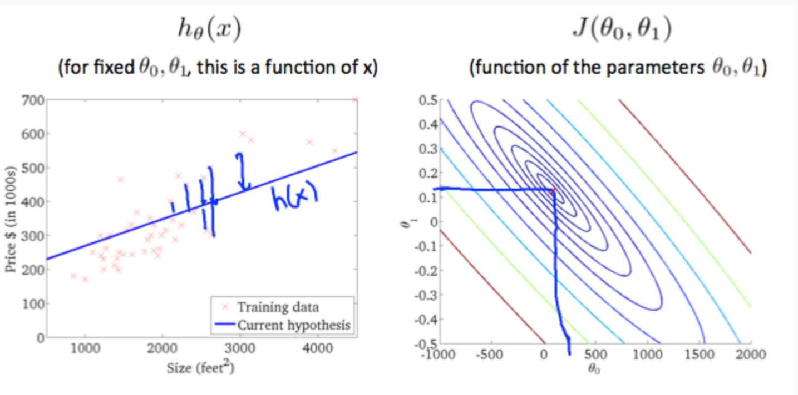

导论
目录
1 What is Machine Learning?
Two definitions of Machine Learning are offered. Arthur Samuel described it as: "the field of study that gives computers the ability to learn without being explicitly programmed." This is an older, informal definition.
Tom Mitchell provides a more modern definition: "A computer program is said to learn from experience E with respect to some class of tasks T and performance measure P, if its performance at tasks in T, as measured by P, improves with experience E."
Example: playing checkers.
E = the experience of playing many games of checkers
T = the task of playing checkers.
P = the probability that the program will win the next game.
In general, any machine learning problem can be assigned to one of two broad classifications:
Supervised learning and Unsupervised learning.
2 Supervised Learning
In supervised learning, we are given a data set and already know what our correct output should look like, having the idea that there is a relationship between the input and the output.
Supervised learning problems are categorized into "regression" and "classification" problems. In a regression problem, we are trying to predict results within a continuous output, meaning that we are trying to map input variables to some continuous function. In a classification problem, we are instead trying to predict results in a discrete output. In other words, we are trying to map input variables into discrete categories.
Example 1:
Given data about the size of houses on the real estate market, try to predict their price. Price as a function of size is a continuous output, so this is a regression problem.
We could turn this example into a classification problem by instead making our output about whether the house "sells for more or less than the asking price." Here we are classifying the houses based on price into two discrete categories.
Example 2:
(a) Regression - Given a picture of a person, we have to predict their age on the basis of the given picture
(b) Classification - Given a patient with a tumor, we have to predict whether the tumor is malignant or benign.
3 Unsupervised Learning
Unsupervised learning allows us to approach problems with little or no idea what our results should look like. We can derive structure from data where we don't necessarily know the effect of the variables.
We can derive this structure by clustering the data based on relationships among the variables in the data.
With unsupervised learning there is no feedback based on the prediction results.
Example:
Clustering: Take a collection of 1,000,000 different genes, and find a way to automatically group these genes into groups that are somehow similar or related by different variables, such as lifespan, location, roles, and so on.
Non-clustering: The "Cocktail Party Algorithm", allows you to find structure in a chaotic environment. (i.e. identifying individual voices and music from a mesh of sounds at a cocktail party).
4 Model Representation
To establish notation for future use, we’ll use \(x(i)\) to denote the “input” variables (living area in this example), also called input features, and \(y(i)\) to denote the “output” or target variable that we are trying to predict (price). A pair \((x(i),y(i))\) is called a training example, and the dataset that we’ll be using to learn—a list of m training examples \((x(i),y(i));i=1,...,m\)—is called a training set. Note that the superscript “\((i)\)” in the notation is simply an index into the training set, and has nothing to do with exponentiation. We will also use X to denote the space of input values, and Y to denote the space of output values. In this example, \(X = Y = \mathbb{R}\).
To describe the supervised learning problem slightly more formally, our goal is, given a training set, to learn a function\(h: X\to Y\) so that \(h(x)\) is a “good” predictor for the corresponding value of \(y\). For historical reasons, this function \(h\) is called a hypothesis. Seen pictorially, the process is therefore like this:

When the target variable that we’re trying to predict is continuous, such as in our housing example, we call the learning problem a regression problem. When \(y\) can take on only a small number of discrete values (such as if, given the living area, we wanted to predict if a dwelling is a house or an apartment, say), we call it a classification problem.
5 Cost Function
We can measure the accuracy of our hypothesis function by using a cost function. This takes an average difference (actually a fancier version of an average) of all the results of the hypothesis with inputs from \(x\)'s and the actual output \(y\)'s.
\begin{equation} \label{eq:1} J(\theta_0, \theta_1) = \dfrac {1}{2m} \displaystyle \sum _{i=1}^m \left ( \hat{y}_{i}- y_{i} \right)^2 = \dfrac {1}{2m} \displaystyle \sum_{i=1}^m \left (h_\theta (x_{i}) - y_{i} \right)^2 \end{equation}To break it apart, it is \(\frac{1}{2}\tilde{x}\) where \(\tilde{x}\) is the mean of the squares of \(h_{\theta}(x_{i}) - y_{i} \), or the difference between the predicted value and the actual value.
This function is otherwise called the "Squared error function", or "Mean squared error". The mean is havled as a convenience for the computation of the gradient decent, as the derivative term of the square function will cancel out the \(\frac{1}{2}\) term. The following image summarizes what the cost function does:

6 Cost Function - Intuition I
If we try to think of it in visual terms, our training data set is scattered on the x-y plane. We are trying to make a straight line (defined by \(h_{\theta}(x)\) ) which passes through these scattered data points.
Our objective is to get the best possible line. The best possible line will be such so that the average squared vertical distances of the scattered points from the line will be the least. Ideally, the line should pass through all the points of our training data set. In such a case, the value of \(J(\theta_{0},\theta_{1})\) will be 0. The following example shows the ideal situation where we have a cost function of 0.

when \(\theta_{1}=1\), we get a slope of 1 which goes through every single data point in our model. Conversely, when \(\theta=0.5\), we see the vertical distance from our fit to the data points increase.

This increases our cost function to 0.58. Plotting several other points yields to the following graph:

Thus as a goal, we should try to minimize the cost function. In this case, \(\theta_{1}=1\) is our global minimum.
7 Cost Function - Intuition II
A contour plot is a graph that contains many contour lines. A contour line of a two variable function has a constant value at all points of the same line. An example of such a graph is the one to the right below.

Taking any color and going along the 'circle', one would expect to get the same value of the cost function. For example, the three green points found on the green line above have the same value for \(J(\theta_{0},\theta_{1})\) and as a result, they are found along the same line. The circled \(x\) displays the value of the cost function for the graph on the left when \(\theta_{0}=800\) and \(\theta_{1} = -0.15\). Taking another \(h(x)\) and plotting its contour plot, one gets the following graphs:

When\(\theta_{0} = 360,\theta_{1}=0\), the value of \(J(\theta_{0},\theta_{1})\) in the contour plot gets closer to the center thus reducing the cost function error. Now giving our hypothesis function a slightly positive slope results in a better fit of the data.

The graph above minimizes the cost function as much as possible and consequently, the result of \(\theta_{1}\) and \(\theta_{0}\) tend to be around 0.12 and 250 respectively. Plotting those values on our graph to the right seems to put our point in the center of the inner most 'circle'.